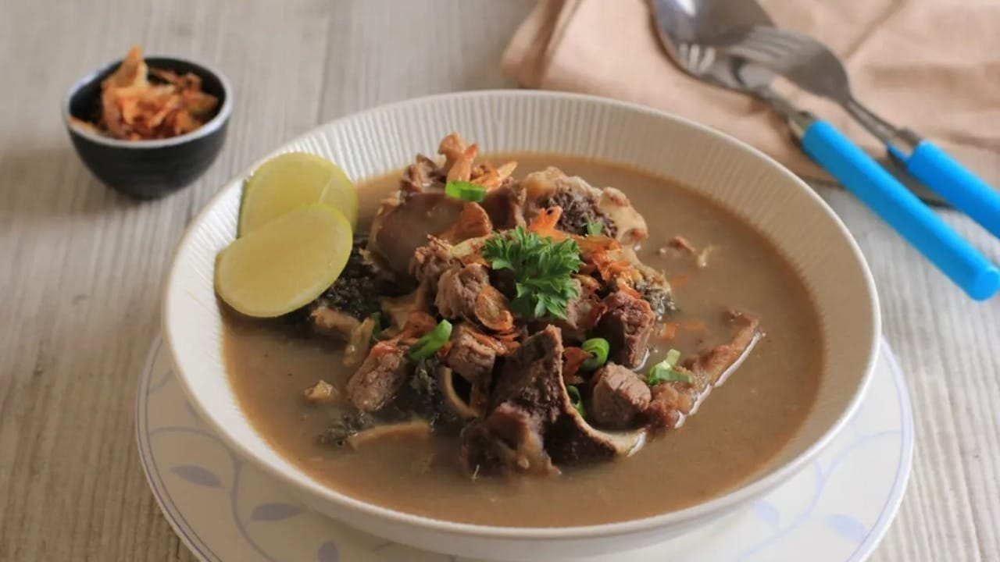
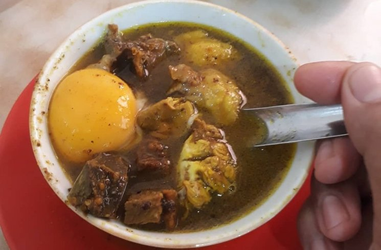
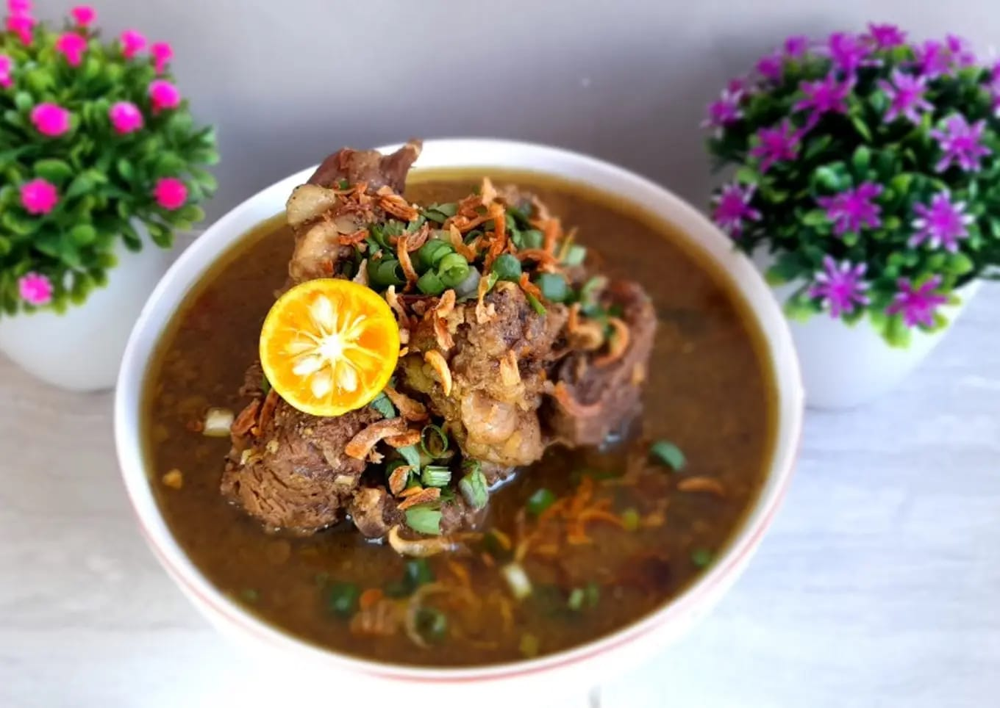
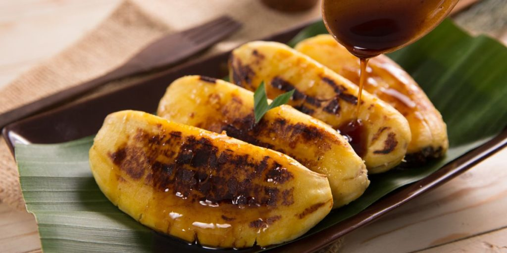
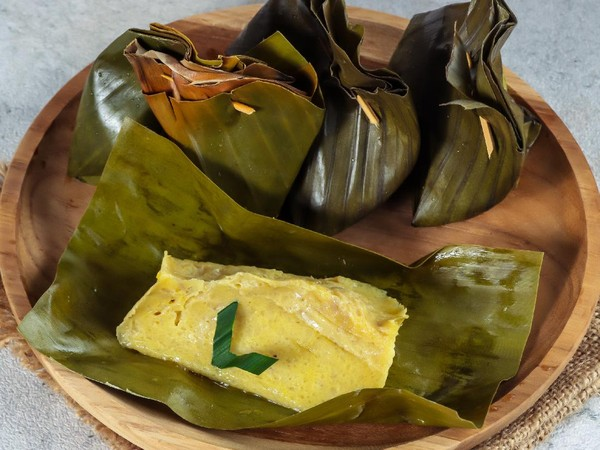

Resep Makanan Khas Sulawesi Selatan
coto Makassar
Coto Makassar adalah hidangan khas berbahan dasar daging sapi dan rempah-rempah, disajikan dengan ketupat atau buras. Rasanya yang kaya membuatnya menjadi primadona.
Mari mencobaPallubasa
Pallubasa menggunakan daging sapi atau kerbau dengan kuah gurih dan taburan kelapa sangrai, menciptakan rasa unik yang tidak terlupakan.
Mari mencobaSop-Konro
Sop-Konro adalah sup iga sapi dengan kuah kaya rempah seperti kayu manis dan ketumbar, menciptakan rasa yang mendalam.
Mari mencobaPisang-epe
Pisang Epe adalah pisang yang dibakar, ditekan, lalu disajikan dengan saus gula merah khas yang kental dan manis.
Mari mencobaBarongko
Barongko adalah kue pisang khas yang dibungkus daun pisang, dicampur dengan santan dan gula, lalu dikukus hingga matang.
Mari mencoba